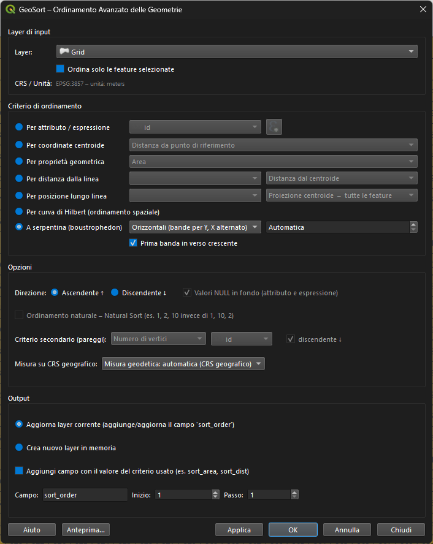
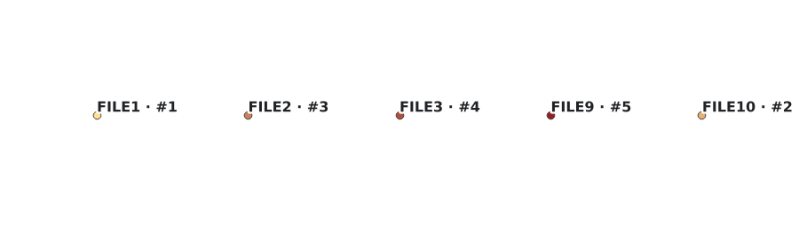
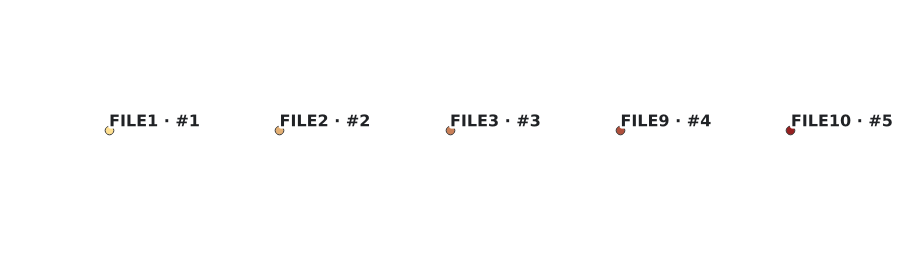
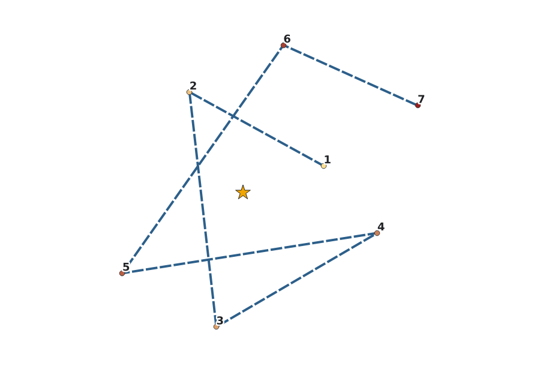
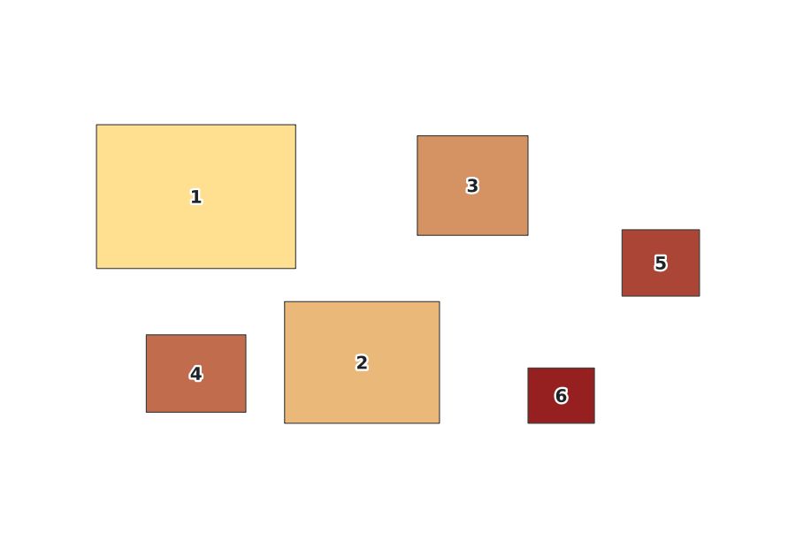
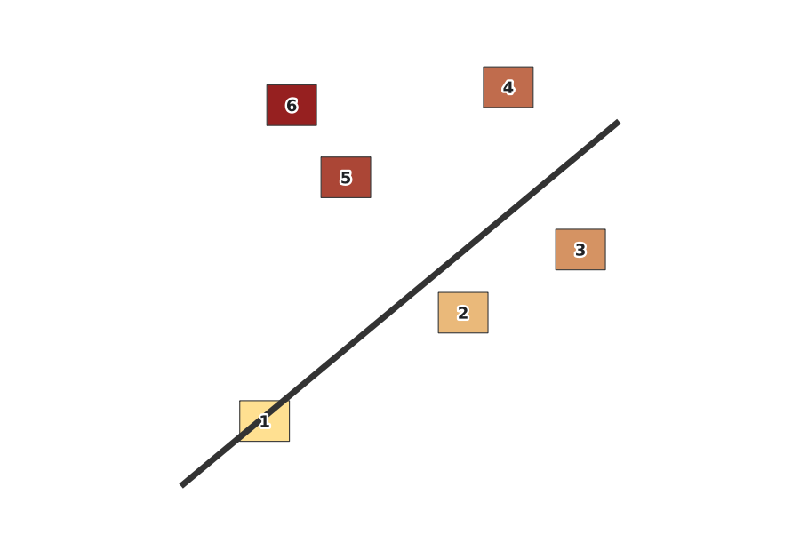
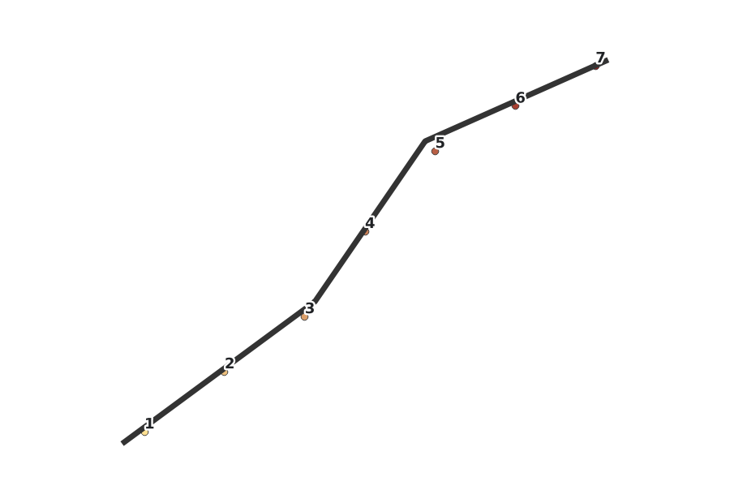
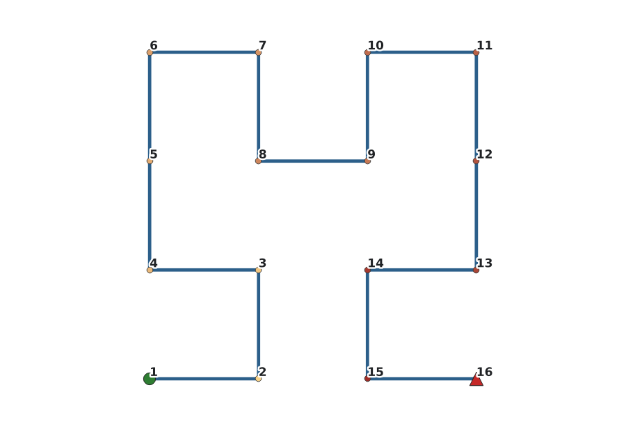
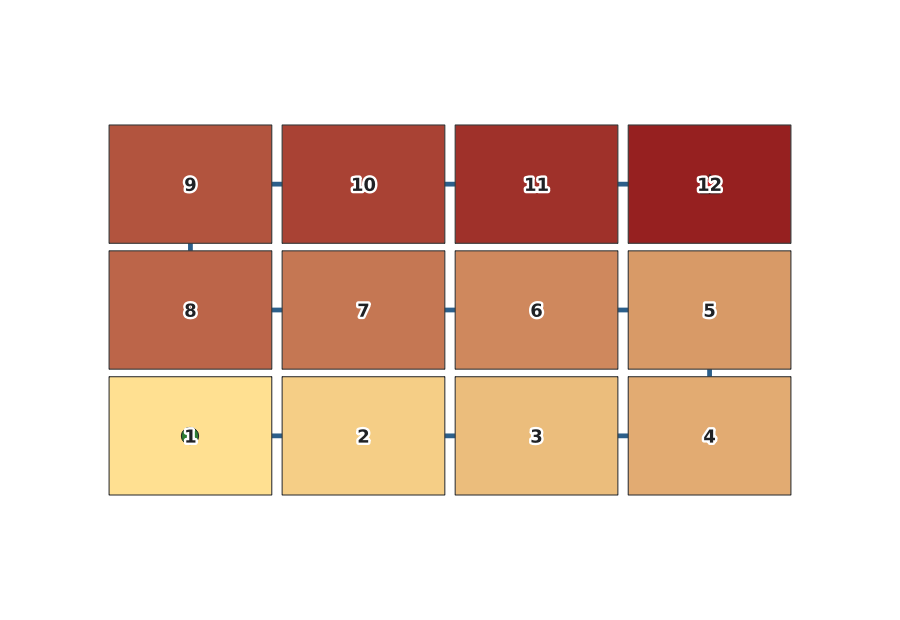
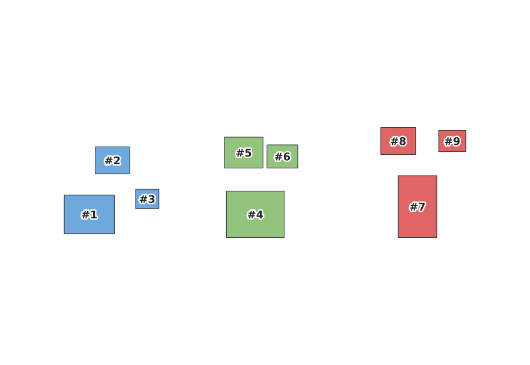

Introduzione
GeoSort è un plugin QGIS che ordina le feature di un layer vettoriale
(punti, linee o poligoni) secondo un criterio geometrico o attributivo a
scelta, e scrive un campo progressivo (default sort_order: 1 =
prima feature nell'ordine scelto) sul layer o su una copia in memoria. È
disponibile sia come dialogo interattivo (menu Vettore → GeoSort) sia
come algoritmo nel Processing Toolbox, utilizzabile in batch, nel
modellatore grafico e via PyQGIS headless.

Questa guida spiega ogni criterio disponibile, i relativi parametri (nel dialogo e nel Processing), quando conviene usarlo e un caso d'uso tipico con uno screenshot prima/dopo. Per la sintesi in forma di tabella vedi anche il README del progetto.
Installazione
- Scarica il file
.zipdel plugin dalla pagina delle release. - In QGIS: Plugin → Gestisci e Installa Plugin → Installa da ZIP.
- Seleziona il file
geosort.zip. - Il plugin compare nel menu Vettore → GeoSort e nel Processing Toolbox sotto GeoSort.
.zip.Concetti base
- Campo progressivo — GeoSort scrive un campo intero (default
sort_order, nome/valore iniziale/passo personalizzabili — vedi Numerazione) con la posizione di ogni feature nell'ordine scelto:1= prima feature. - Direzione — Ascendente o Discendente, si applica a qualunque criterio.
- Valori
NULL— per criteri attributo/espressione, scegli se le feature con valoreNULLvanno in cima o in fondo all'ordine. - Geometrie NULL o incompatibili — feature senza geometria, o con un tipo non compatibile col criterio scelto (es. punti con criterio "area"), non interrompono l'ordinamento: vengono relegate in fondo.
- Anteprima — il bottone Anteprima… apre un popup con le prime feature ordinate (FID, valore
sort_order, valore del criterio) per verificare il risultato prima di applicare le modifiche.
Attributo / Espressione
Attributo tabellare tutti i tipi
Ordina per il valore di un qualunque campo del layer (testo, intero, reale, data).
Dialogo: radio "Per attributo / espressione" + combo campo • Processing: CRITERION=0, ATTRIBUTE_FIELD
Quando usarlo: è il criterio più diretto — nome via, codice catastale, categoria, data di rilievo, qualunque colonna già presente nella tabella attributi.
Espressione QGIS tutti i tipi
Ordina per il risultato di un'espressione QGIS arbitraria, la stessa sintassi del Field Calculator. Clicca il pulsante ε per aprire l'editor di espressioni; l'espressione attiva viene evidenziata in verde, con un bottone Rimuovi per tornare al campo singolo.
Dialogo: radio "Per attributo / espressione" + editor espressione • Processing: CRITERION=16, EXPRESSION
- Combinazione di campi:
"area_kmq" / "pop" - Funzioni geometriche:
length($geometry),area($geometry) - Condizioni:
CASE WHEN "tipo"='A' THEN 1 ELSE 2 END - Concatenazione per chiavi composte:
"fid" || "id_poly"
Quando usarlo: quando il criterio non è un singolo campo ma una combinazione, un calcolo geometrico al volo, o una classificazione condizionale.
Modalità di ordinamento testuale
Per entrambi i criteri sopra, un valore testuale può essere confrontato in due modi:
| Modalità | Comportamento | Esempio |
|---|---|---|
| Lessicografico (default) | confronto carattere per carattere | "1010" < "11" < "1111" |
| Natural Sort | le sequenze di cifre incorporate sono confrontate come numeri interi | "11" < "1010" < "1111" |
Utile con campi alfanumerici come FILE1, FILE2, FILE10 — con l'ordine lessicografico FILE10 finirebbe prima di FILE2.


FOGLIO_1…FOGLIO_120: senza Natural Sort, FOGLIO_100 comparirebbe subito dopo FOGLIO_1.Coordinate centroide
Centroide — coordinata X / Y tutti i tipi
Ordina per la posizione geografica del centroide della geometria, lungo l'asse X (ovest→est) o Y (sud→nord).
Processing: CRITERION=1 (X) / CRITERION=2 (Y)
Quando usarlo: numerazione progressiva "da sinistra a destra" o "dal basso verso l'alto" — pali, pozzetti, alberi lungo un asse dominante.
Centroide — distanza da punto di riferimento tutti i tipi
Ordina per distanza euclidea (o geodetica, vedi Misura geodetica) del centroide da un punto di riferimento configurabile. Nel dialogo il punto si imposta con le caselle X/Y oppure cliccando Seleziona punto sulla mappa — il dialogo si abbassa (senza chiudersi) e il primo click sulla mappa cattura le coordinate; Esc annulla la selezione.
Dialogo: spin box X/Y + picker sulla mappa • Processing: CRITERION=3, REF_POINT (opzionale, formato "x,y [EPSG:xxxx]"; vuoto = origine 0,0)

Proprietà geometrica
Area / Perimetro poligoni
Ordina i poligoni per superficie o lunghezza del perimetro.
Processing: CRITERION=4 (area) / CRITERION=5 (perimetro)
Lunghezza linee
Ordina le linee per lunghezza totale.
Processing: CRITERION=6
Numero di vertici tutti i tipi
Ordina per conteggio dei vertici della geometria.
Processing: CRITERION=7
Bounding Box — larghezza / altezza / area / Xmin / Ymin tutti i tipi
Cinque varianti sulle dimensioni e la posizione del rettangolo di inviluppo (bounding box) della geometria: larghezza, altezza, area, coordinata minima X, coordinata minima Y.
Processing: CRITERION=8 (larghezza), 9 (altezza), 10 (area), 11 (Xmin), 12 (Ymin)

Distanza dalla linea
Distanza dalla linea di riferimento tutti i tipi
Ordina le feature per distanza perpendicolare da una linea di riferimento (un secondo layer di tipo linea), in due modalità:
- Distanza dal centroide — distanza tra il centroide della feature e la linea
- Distanza dall'elemento — distanza dal punto più vicino dell'intera geometria alla linea
Dialogo: combo layer linea + modalità • Processing: CRITERION=14, REF_LAYER, LINE_DISTANCE_MODE (avanzato). Il layer di riferimento viene riproiettato automaticamente se ha un CRS diverso dal layer di input.

Posizione lungo linea
Posizione lungo linea di riferimento tutti i tipi
Ordina le feature secondo la loro posizione proiettata lungo una linea di riferimento (progressiva chilometrica), in tre modalità:
- Proiezione centroide — tutte le feature — ogni feature viene proiettata sulla linea e ordinata per la posizione risultante, anche se non la interseca
- Solo intersecanti — via centroide proiettato — come sopra, ma solo le feature che intersecano la linea; le altre sono escluse dall'ordinamento
- Solo intersecanti — via primo punto di contatto — come sopra, ma la posizione è quella del primo punto di intersezione, non del centroide proiettato
Dialogo: combo layer linea + modalità • Processing: CRITERION=13, REF_LAYER, LINE_MODE (avanzato)

Curva di Hilbert
Curva di Hilbert (ordinamento spaziale) tutti i tipi
Ordina le feature lungo una curva di Hilbert calcolata sui centroidi, normalizzati sull'extent complessivo del layer: le feature vicine nello spazio restano vicine anche nell'ordine risultante — a differenza di un ordinamento per riga (X o Y) che può produrre salti lunghi tra feature spazialmente vicine ma agli estremi opposti di una riga.
Processing: CRITERION=15, parametro avanzato HILBERT_ORDER (default 16, risoluzione della griglia — non serve quasi mai cambiarlo)

Serpentina (boustrophedon)
Serpentina tutti i tipi
Ordina le feature a bande, con l'asse trasversale alternato crescente/decrescente da una banda alla successiva — l'ordine classico per numerare le tavole di una serie cartografica a taglio regolare o un percorso di volo fotogrammetrico, senza il salto lungo da fine banda a inizio banda successiva tipico di un ordinamento a righe semplice.
- Orientamento bande — orizzontali (per Y, X alternato — default) o verticali (per X, Y alternato)
- Dimensione banda — altezza (orizzontali) o larghezza (verticali) di ciascuna banda, nelle unità del CRS; 0/vuoto = automatica, dalla dimensione media delle bounding box delle feature
- Angolo di partenza — combinando la Direzione generale (quale banda è la prima) con Prima banda in verso crescente (quale verso ha l'asse trasversale nella prima banda) si sceglie liberamente uno qualunque dei quattro angoli della griglia come punto di partenza
Dialogo: combo orientamento + spin box dimensione banda + checkbox "Prima banda in verso crescente" • Processing: CRITERION=17, BAND_AXIS, BAND_SIZE, CROSS_ASCENDING (tutti avanzati)

Ordinamento multi-criterio (gerarchico)
Imposta un criterio secondario per spezzare i pareggi del criterio primario. Ogni livello ha la propria direzione (ascendente/discendente).

Dialogo: combo "Criterio secondario" • Processing: SECONDARY_CRITERION, SECONDARY_FIELD, SECONDARY_EXPRESSION, SECONDARY_DIRECTION (tutti avanzati)
Misura geodetica (CRS geografici)
Su un layer con CRS in gradi (es. EPSG:4326) le misure planari di area e lunghezza sono espresse in gradi² o gradi — valori metricamente privi di significato, che possono alterare l'ordinamento in base alla latitudine. GeoSort può calcolare automaticamente area, perimetro, lunghezza e distanze sull'ellissoide (misura geodetica, in m² o m).
| Modalità | Comportamento |
|---|---|
| Auto (default) | geodetica attivata automaticamente se il CRS è in gradi; su CRS proiettati restano le misure planari. Un avviso non bloccante segnala l'attivazione. |
| Sempre | geodetica sempre abilitata, indipendentemente dal CRS. |
| Mai | misura sempre planare, indipendentemente dal CRS. |
Criteri interessati: area poligono, perimetro poligono, lunghezza linea, distanza centroide da punto di riferimento, distanza dalla linea di riferimento.
Dialogo: combo "Misura su CRS geografico" • Processing: parametro avanzato GEODESIC (Auto/Sempre/Mai)
Numerazione personalizzata
Il campo progressivo è configurabile su tre assi, sia nel dialogo che nel Processing:
| Parametro | Default | Esempio |
|---|---|---|
| Nome del campo | sort_order | rank, ordine — se il campo esiste già sul layer, viene sovrascritto invece di duplicato |
| Valore iniziale | 1 | 0 per una numerazione da zero |
| Passo | 1 | 10 → 10, 20, 30…, per lasciare spazio a inserimenti futuri |
Processing: parametri avanzati ORDER_FIELD, START, STEP
Opzionalmente, GeoSort può aggiungere anche un campo sort_value con il valore grezzo del criterio usato (es. l'area, la distanza) — checkbox "Aggiungi campo con il valore del criterio usato" nel dialogo, ADD_VALUE_FIELD nel Processing.
Solo feature selezionate
- Con la checkbox Ordina solo le feature selezionate, l'ordinamento considera esclusivamente le feature selezionate sul layer; in modalità Aggiorna layer corrente il campo
sort_orderviene scritto solo su di esse. - Nel Processing Toolbox la stessa funzione è offerta dalla spunta nativa di QGIS Solo feature selezionate sul layer di input (
QgsProcessingFeatureSourceDefinition(..., selectedFeaturesOnly=True)da PyQGIS).
Output
- Aggiorna il layer corrente — aggiunge o aggiorna il campo progressivo (default
sort_order). Se il campo esiste già, viene chiesta conferma prima di sovrascriverlo. La scrittura è racchiusa in un singolo comando di undo, annullabile con Ctrl+Z anche su migliaia di feature. - Crea nuovo layer in memoria — crea una copia ordinata senza modificare l'originale.
Processing Toolbox & PyQGIS
GeoSort è disponibile anche nel Processing Toolbox: Toolbox → GeoSort → Ordina feature (GeoSort), utilizzabile in batch, nel modellatore grafico e via PyQGIS headless:
import processing
result = processing.run("geosort:geosort_sort", {
'INPUT': layer,
'CRITERION': 0, # 0 = Attributo tabellare (vedi elenco criteri sopra)
'ATTRIBUTE_FIELD': 'regione',
'DIRECTION': True, # True = Ascendente
'NULLS_LAST': True,
'NATURAL_SORT': False, # True = Natural Sort (cifre come numeri)
'SECONDARY_CRITERION': 5, # 5 = Area (poligoni)
'SECONDARY_DIRECTION': False, # False = Discendente
'ADD_VALUE_FIELD': False,
'START': 0, # default 1
'STEP': 10, # default 1 → 0, 10, 20, 30...
'ORDER_FIELD': 'rank', # default 'sort_order'
'OUTPUT': 'memory:'
})
output_layer = result['OUTPUT']Per il criterio centroid_dist (indice 3) è possibile indicare un punto di riferimento diverso dall'origine:
result = processing.run("geosort:geosort_sort", {
'INPUT': layer,
'CRITERION': 3,
'REF_POINT': '500000,4649776 [EPSG:32633]',
'DIRECTION': True,
'OUTPUT': 'memory:'
})Per ordinare solo le feature selezionate da PyQGIS:
from qgis.core import QgsProcessingFeatureSourceDefinition
result = processing.run("geosort:geosort_sort", {
'INPUT': QgsProcessingFeatureSourceDefinition(layer.id(), selectedFeaturesOnly=True),
'CRITERION': 1,
'OUTPUT': 'memory:'
})Casi d'uso tipici
| Obiettivo | Criterio consigliato |
|---|---|
| Numerare le tavole di una cartografia a taglio regolare o pianificare un volo fotogrammetrico | Serpentina |
| Scrivere un GeoPackage con letture spazialmente più veloci, o un atlante "a percorso continuo" | Curva di Hilbert |
| Ordinare particelle catastali per dimensione, dalla più grande alla più piccola | Area (discendente) |
| Numerare pali, cippi o sostegni lungo una strada/ferrovia/elettrodotto | Posizione lungo linea |
| Ordinare edifici per vicinanza a una strada o alla costa | Distanza dalla linea |
| Report ordinato per regione e, a parità di regione, per area | Multi-criterio (regione → area) |
Ordinare codici alfanumerici tipo FILE1, FILE2, FILE10 nell'ordine "naturale" | Attributo + Natural Sort |
| Ordinamento radiale da una centrale operativa o un nodo di rete | Centroide — distanza |
FAQ / Troubleshooting
Alcune feature finiscono sempre in fondo, perché?
Hanno geometria NULL/vuota, oppure un tipo non compatibile con il criterio scelto (es. punti con criterio "area" su un layer a geometria mista). GeoSort non genera errore in questi casi: relega semplicemente quelle feature in coda all'ordine.
Perché l'ordine per area cambia se sposto il layer su un altro CRS?
Su CRS geografici (gradi) le misure planari non sono metricamente significative. Vedi Misura geodetica: in modalità Auto (default) GeoSort passa automaticamente alla misura sull'ellissoide quando rileva un CRS geografico.
Serpentina e Curva di Hilbert non compaiono come criterio secondario, perché?
Entrambi richiedono di calcolare bande o extent sull'intero layer prima di poter assegnare un ordine — un requisito incompatibile con il ruolo di "tie-break" del criterio secondario, che opera solo all'interno dei gruppi già ordinati dal primario. Lo stesso vale per i criteri basati su una linea di riferimento.
Posso annullare l'ordinamento dopo averlo applicato?
Sì, con Ctrl+Z: la scrittura del campo sort_order è racchiusa in un unico comando di undo, anche su migliaia di feature.